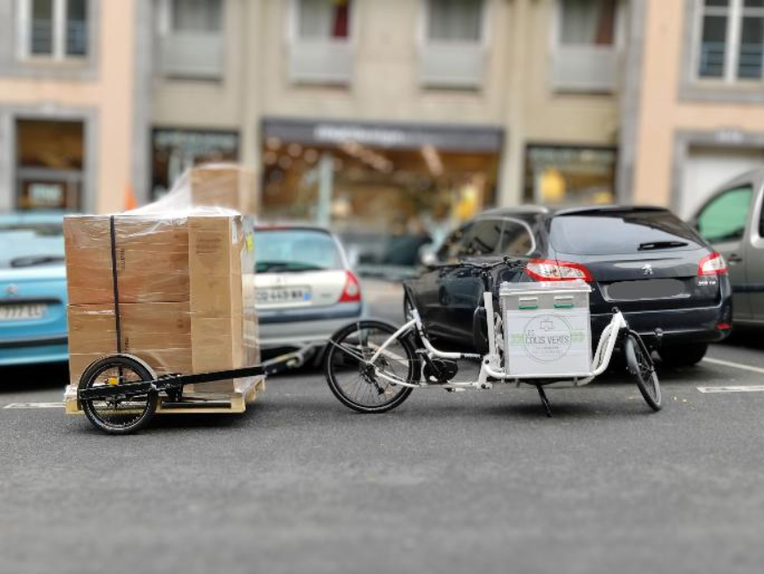
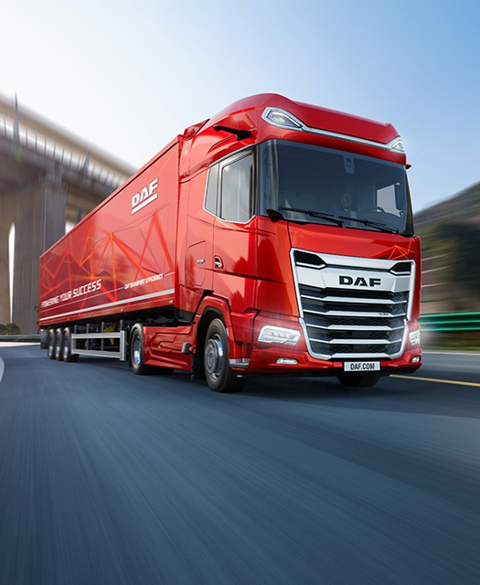

Livrer en ville sans casser la planète
Découvrez nos idées pour une logistique urbaine propre et efficace.

Le défi expliqué simplement
Aujourd’hui, il y a de plus en plus de livraisons à cause du e‑commerce (Amazon, etc.). Le problème, c’est que ça pollue beaucoup, surtout avec les camions.

-
 Moins polluer (réduire le CO₂)
Moins polluer (réduire le CO₂)
-
 Protéger les centres‑villes historiques
Protéger les centres‑villes historiques
-
 Continuer à livrer les magasins et les habitants correctement
Continuer à livrer les magasins et les habitants correctement
Ce qu’il faut réussir à faire
- Relier tous les types de transport (camion, train, bateau, avion) pour que ça fonctionne bien ensemble.
- Créer des petits centres de stockage en ville (micro-hubs) qui ne prennent pas trop de place et qui s’intègrent bien dans le paysage.
- Utiliser des moyens de transport plus propres pour le dernier trajet, comme des vélos cargos ou des véhicules électriques.
- Éviter que les commerces du centre-ville ferment à cause de problèmes de livraison.
Résumé en une phrase
Il faut trouver un moyen de livrer tout le monde en ville, sans trop polluer, sans abîmer les centres historiques, et sans bloquer l’économie.